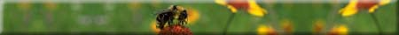
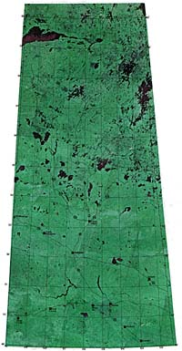
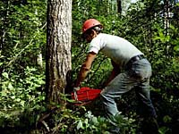
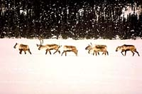

Ecology and ecosystem are terms that are used a lot these days. What do they mean and what do they have to do with us??
Ecology is a branch of science that has been around since humans first became part of the earth's population. Ecology is the study of the relation between organisms and their natural environment. The natural environment includes both living (biotic) and non-living (abiotic) things and this natural environment can be divided into smaller environmental units or ecosystems. Each ecosystem can varies in size. Examples of ecosystems include:
- forests
- lakes
- potholes or sloughs
- summerfallow fields
- rotting logs
- our bodies
Let's take a look at one of the most prominant ecosystems in Saskatchewan; the forest.
 Forests are one of Saskatchewan's most valuable assets. Over fifty per cent of the province's total land area is covered by forest. Long before they provided any measurable economic value, forests have provided many ecological benefits which we take for granted. Forests capture solar energy, store water and nutrients, moderate local and regional climates, develop and condition soils, temper the effects of global warming, serve as important carbon reservoirs, and perpetuate biological diversity and ecological complexity. Life as we know it would not be possible in the absence of these ecological processes in forested regions of the planet. |

Forests provide the essentials of life (food, water, shelter and space) to wildlife. The forest is part of an intricate web of life that includes all stages of growth and succession. |
 Unsound forest management practices can greatly alter an entire ecosystem, damaging wildlife habitat. Forest management plans are being designed to protect critical wildlife habitat and ensure that the forest continues to represent its rich diversity of wildlife species. |
 Riparian and woodland caribou habitat are two examples that are being identified for long-term protection. |

Forest companies are working on ways of changing logging practices. This ensures that all stages of forest growth, each with its unique complement of wildlife, continues to be represented in the forest ecosystem. |

The rate of forest harvesting is also under study, not only in terms of its impact on wildlife, but in terms of its influence on atmospheric oxygen and its effect on the water table. |